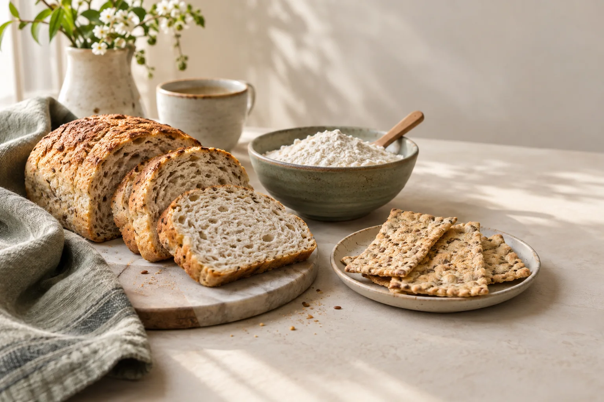
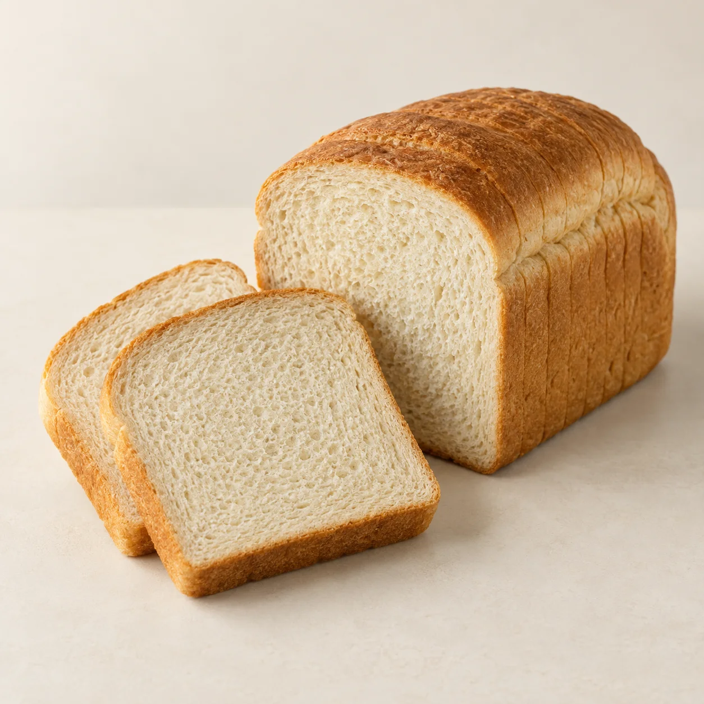
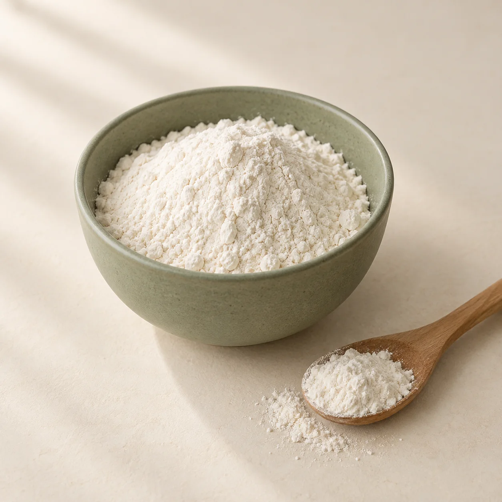
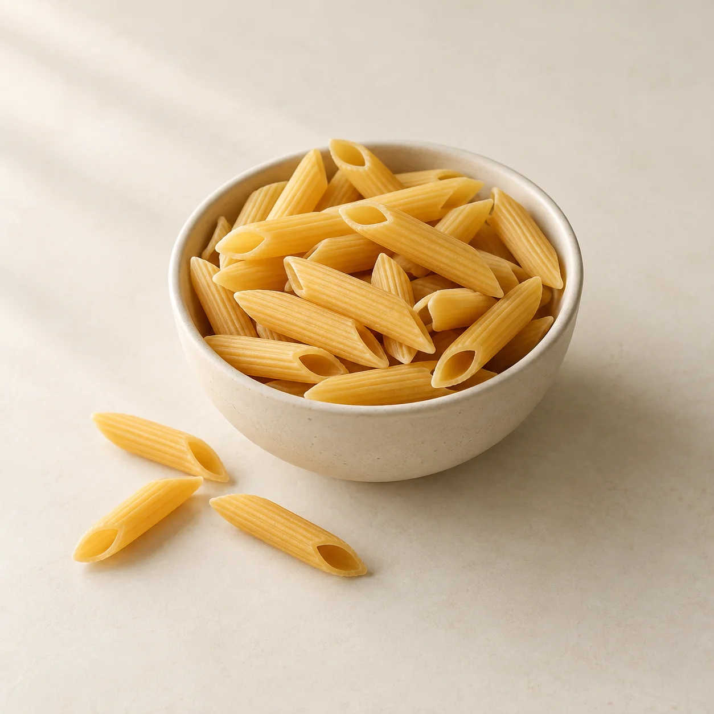
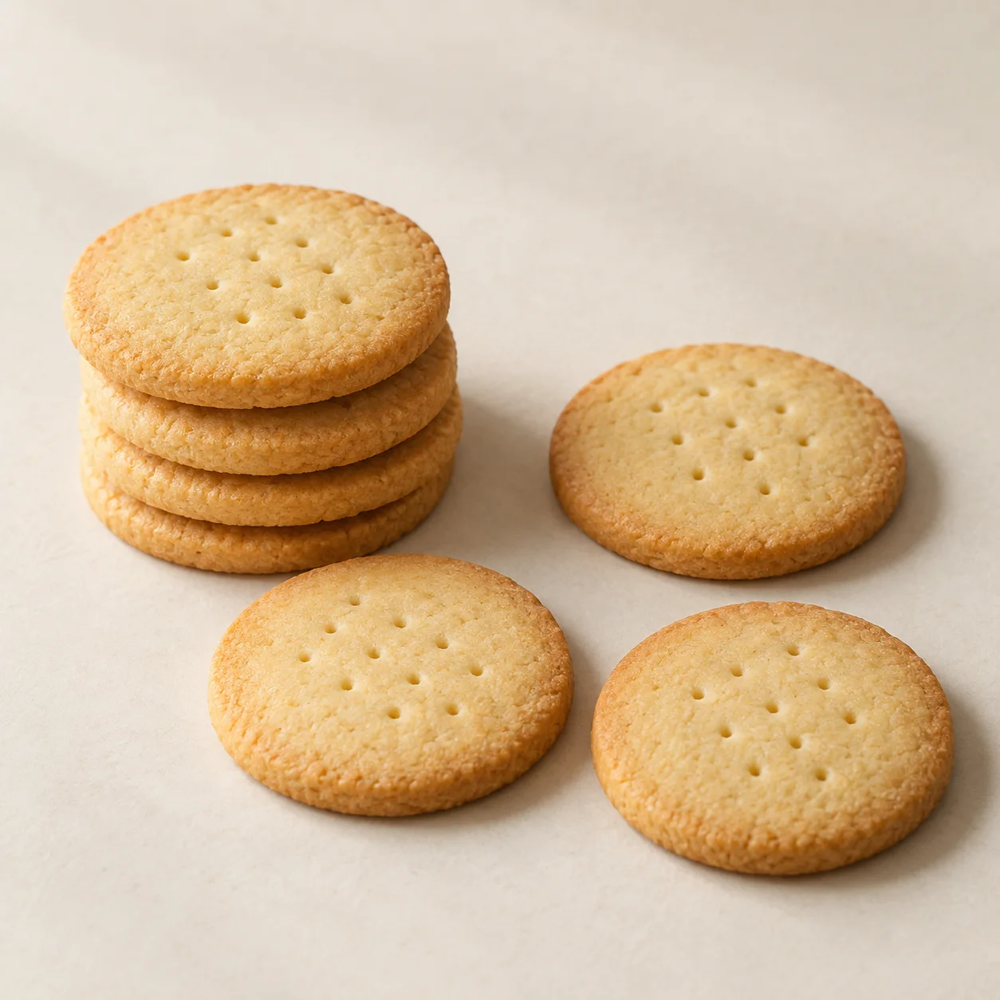

معرفی محصولات بدون گلوتن
آشنایی با گروههای غذایی و محصولات ایرانی و وارداتی از طریق اطلاعرسانیهای کانال سلیاکفود.
دیدن معرفی محصولاتانجمن ایرانی سلیاک
برای آشنایی با محصولات بدون گلوتن و هماهنگی تهیه آنها، در کنار افراد مبتلا به سلیاک و خانوادههایشان هستیم.
معرفی محصولات و تازهترین اطلاعرسانیها در کانال سلیاکفود

برای پرسیدن درباره محصولات یا هماهنگی مراجعه، مستقیم با نمایندگی در ارتباط باشید.
گفتوگو در تلگرامدرباره ما
سلیاکفود، راه ارتباط با نمایندگی تهران انجمن ایرانی سلیاک است. کار ما معرفی محصولات بدون گلوتن، اطلاعرسانی درباره آنها و هماهنگی تهیه محصولات برای افراد مبتلا به سلیاک و خانوادههای آنهاست.
این صفحه برای آشنایی با ما و پیدا کردن راه ارتباط ساخته شده است. خبرهای محصولات و اطلاعات تازه را از کانالهای سلیاکفود دنبال کنید.
فعالیتهای ما
پیش از مراجعه یا تصمیم به تهیه محصول، اطلاعات روز را از نمایندگی بپرسید.
آشنایی با گروههای غذایی و محصولات ایرانی و وارداتی از طریق اطلاعرسانیهای کانال سلیاکفود.
دیدن معرفی محصولاتبرای اطلاع از موجودی، شیوه ارسال به شهر خود و زمان مراجعه حضوری، پیش از اقدام با نمایندگی هماهنگ کنید.
راههای ارتباطدرباره امکان تهیه کیک، شیرینی و کیک تولد، ترکیبات و زمان آمادهسازی از نمایندگی بپرسید.
پرسیدن جزئیاتآشنایی با محصولات
چند گروه از محصولات معرفیشده در سلیاکفود؛ برای اطلاعات هر محصول به کانال مراجعه کنید.

برای صبحانه و وعدههای روزانه

برای پختوپز در خانه

برای آماده کردن یک وعده غذا

برای میانوعدههای روزانه
این تصاویر نمایشیاند و بستهبندی، ترکیبات یا موجودی محصول خاصی را نشان نمیدهند. اطلاعات هر محصول و وضعیت تأیید آن را جداگانه از نمایندگی بپرسید.
ارتباط با سلیاکفود
برای پرسیدن درباره محصولات، هماهنگی تهیه یا مراجعه حضوری، به نمایندگی پیام بدهید.
پیام به نمایندگی در تلگرامتهران، محدوده میدان ولیعصر، خیابان کریمخان و نجاتاللهی شمالی.
نشانی دقیق و زمان مراجعه را پیش از حرکت از نمایندگی دریافت کنید.
معرفی محصولات و اطلاعرسانیها در کانالهای سلیاکفود
اگر یکی از پیامرسانها در دسترس نیست، از راههای دیگر استفاده کنید.
پرسشهای رایج
چند پاسخ کوتاه برای شروع
معرفی محصولات و اطلاعرسانیها در کانال تلگرام سلیاکفود منتشر میشود. موجودی و جزئیات هر محصول را پیش از تهیه از نمایندگی بپرسید.
پیش از حرکت، از طریق پیام به نمایندگی زمان مراجعه و نشانی دقیق را هماهنگ کنید.
نام محصول و شهر مقصد را به نمایندگی بگویید تا موجودی، امکان و روش ارسال، هزینه و زمان تحویل پیش از نهایی کردن درخواست مشخص شود.
نوع کیک یا شیرینی و تاریخ موردنظرتان را در گفتوگو با نمایندگی مطرح کنید. امکان تهیه، ترکیبات و زمان آمادهسازی باید پیش از ثبت درخواست مشخص شود.
این سایت برای معرفی نمایندگی و راههای ارتباط است. برای اطلاعات محصولات و هماهنگی تهیه آنها، با نمایندگی در ارتباط باشید.